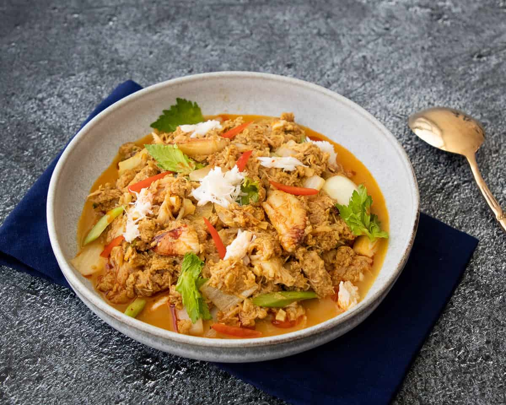

Crab Curry Stir Fry

Description
Crab curry stir fry or pu pad pong garee is a classic Thai dish and a mainstay of Thai seafood
restaurants. It's so good it's easily in my top 5 Thai seafood dishes.
Yet, it's almost unknown outside of Thailand as very few Thai restaurants offer it.
Ingredients
- Thai chili paste
- evaporated milk
- cloves garlic
- curry powder
- 7 oz fresh crab meat
- handful celery leaves and thinly sliced stalk
- A few pieces of julienned red chilies or bell pepper
- jasmine rice
Steps
- Whisk the chili paste and the chili oil
together to loosen the paste. Add about a tablespoon of the evaporated
milk and whisk to make sure there are no lumps of chili paste remaining.
Add the rest of the evaporated milk, the eggs, oyster sauce, fish sauce
and white pepper. Whisk until well combined.
- Place a nonstick skillet or well-seasoned wok on medium heat, then add
the oil, onions, and garlic and saute for a minute or so just until the
onion doesn't taste raw but is still crunchy
- Keeping the heat on medium, add the curry powder and stir for just 5 seconds to infuse into the oil.
Do not use high heat or the curry powder will burn instantly
- Add the crab and toss for just 10-15 seconds to heat up the crab.
Be gentle, try not to break up the crab too much
- Add the custard and using a rubber spatula stir without stopping until the mixture is thick and creamy, but still looks slightly undercooked.
Off the heat, stir in the celery and immediately transfer onto a serving plate
- Garnish with red pepper juliennes, more celery leaves and extra crab meat
- Serve with jasmine rice and prik nam pla, if desired